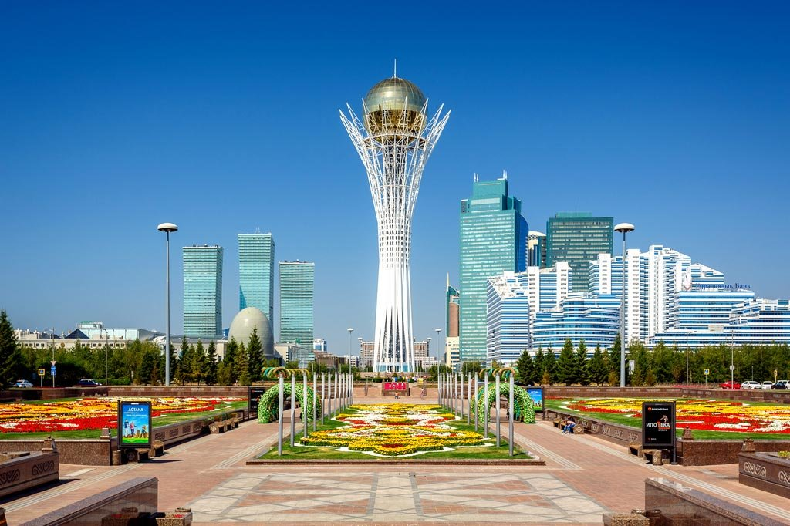

Фотосурет уақытша жүктелмеді')">«Бәйтерек» — Астананың танымал сәулеттік нышандарының бірі. Оның идеясы өмір ағашы мен Самұрық құсының алтын жұмыртқасы туралы аңызға сүйенеді.
Қосымша ақпарат: visitastana.kz
Сурет: https://putidorogi-nn.ru/aziya/74-monument-baiterek